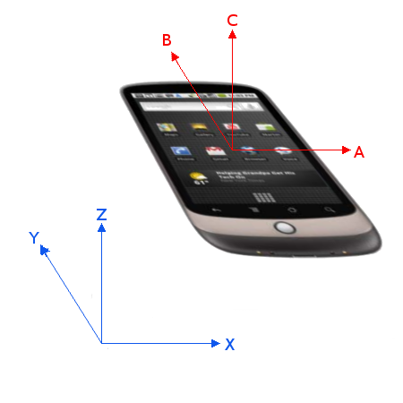
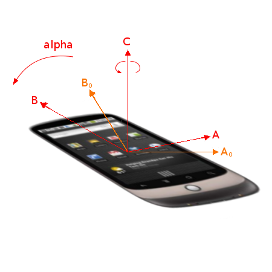
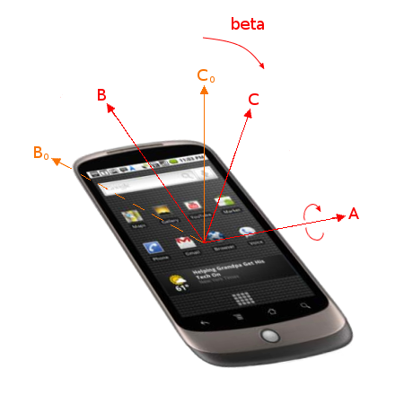
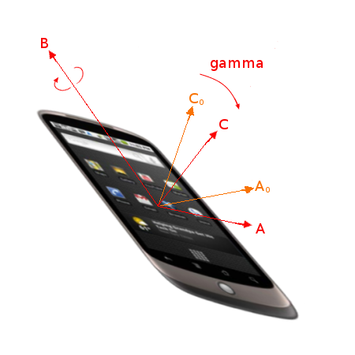

This specification defines several new DOM events that provide information about the physical orientation and motion of a hosting device.
Status of this document
This is a public copy of the editors’ draft.
It is provided for discussion only and may change at any moment.
Its publication here does not imply endorsement of its contents by W3C.
Don’t cite this document other than as work in progress.
If you wish to make comments regarding this document, please send them to public-device-apis@w3.org (subscribe, archives).
When sending e-mail,
please put the text “orientation-event” in the subject,
preferably like this:
“[orientation-event] …summary of comment…”.
All comments are welcome.
This document was produced by a group operating under
the W3C Patent Policy.
W3C maintains a public list of any patent disclosures made in connection with the deliverables of the group;
that page also includes instructions for disclosing a patent.
An individual who has actual knowledge of a patent which the individual believes contains Essential Claim(s) must disclose the information in accordance with section 6 of the W3C Patent Policy.
All diagrams, examples, and notes in this specification are non-normative, as are all sections explicitly marked non-normative. Everything else in this specification is normative.
The key words "MUST", "MUST NOT", "REQUIRED", "SHOULD", "SHOULD NOT", "RECOMMENDED", "MAY", and "OPTIONAL" in the normative parts of this document are to be interpreted as described in RFC2119. For readability, these words do not appear in all uppercase letters in this specification. [RFC2119]
Requirements phrased in the imperative as part of algorithms (such as "strip any leading space characters" or "return false and abort these steps") are to be interpreted with the meaning of the key word ("must", "should", "may", etc) used in introducing the algorithm.
Conformance requirements phrased as algorithms or specific steps may be implemented in any manner, so long as the end result is equivalent. (In particular, the algorithms defined in this specification are intended to be easy to follow, and not intended to be performant.)
User agents may impose implementation-specific limits on otherwise unconstrained inputs, e.g. to prevent denial of service attacks, to guard against running out of memory, or to work around platform-specific limitations.
Implementations that use ECMAScript to implement the APIs defined in this specification must implement them in a manner consistent with the ECMAScript Bindings defined in the Web IDL specification, as this specification uses that specification’s terminology. [WEBIDL]
The events introduced by this specification implement the Event interface defined in the DOM Specification, [DOM]. Implementations must therefore support this specification.
2. Introduction
This section is non-normative.
This specification provides two new DOM events for obtaining information about the physical orientation and movement of the hosting device. The information provided by the events is not raw sensor data, but rather high-level data which is agnostic to the underlying source of information. Common sources of information include gyroscopes, compasses and accelerometers.
The first DOM event provided by the specification, deviceorientation, supplies the physical orientation of the device, expressed as a series of rotations from a local coordinate frame.
The second DOM event provided by this specification, devicemotion, supplies the acceleration of the device, expressed in Cartesian coordinates in a coordinate frame defined in the device. It also supplies the rotation rate of the device about a local coordinate frame. Where practically possible, the event should provide the acceleration of the device’s center of mass.
The following code extracts illustrate basic use of the events.
window.addEventListener("deviceorientation",function(event){// process event.alpha, event.beta and event.gamma},true);
A device lying flat on a horizontal surface with the top of the screen pointing West has the following orientation:
{
alpha:90,
beta:0,
gamma:0};
To get the compass heading, one would simply subtract alpha from 360 degrees. As the device is turned on the horizontal surface, the compass heading is (360 - alpha).
A user is holding the device in their hand, with the screen in a vertical plane and the top of the screen pointing upwards. The value of beta is 90, irrespective of what alpha and gamma are.
A user facing a compass heading of alpha degrees is holding the device in their hand, with the screen in a vertical plane and the top of the screen pointing to their right. The orientation of the device is:
window.addEventListener("devicemotion",function(event){// Process event.acceleration, event.accelerationIncludingGravity,// event.rotationRate and event.interval},true);
A device in free-fall, with the screen horizontal and upmost, has an accelerationIncludingGravity of zero and the following value for acceleration:
{
x:0,
y:0,
z:-9.8};
A device is mounted in a vehicle, with the screen in a vertical plane, the top uppermost and facing the rear of the vehicle. The vehicle is travelling at speed v around a right-hand bend of radius r. The device records a positive x component for both acceleration and accelerationIncludingGravity. The device also records a negative value for rotationRate.gamma:
This specification is limited to providing DOM events for retrieving information describing the physical orientation and motion of the hosting device. The intended purpose of this API is to enable simple use cases such as those in Use-Cases section. The scope of this specification does not include providing utilities to manipulate this data, such as transformation libraries. Nor does it include providing access to low sensor data, or direct control of these sensors.
4. Model
4.1. Device Orientation
This specification expresses a device’s physical orientation as a series of rotations relative to an implementation-defined reference coordinate frame.
x is in the plane of the screen or keyboard and is positive towards the right hand side of the screen or keyboard.
y is in the plane of the screen or keyboard and is positive towards the top of the screen or keyboard.
z is perpendicular to the screen or keyboard, positive out of the screen or keyboard.
For a mobile device such as a phone or tablet, the device coordinate frame is defined relative to the screen in its standard orientation, typically portrait. This means that slide-out elements such as keyboards are not deployed, and swiveling elements such as displays are folded to their default position. If the orientation of the screen changes when the device is rotated or a slide-out keyboard is deployed, this does not affect the orientation of the coordinate frame relative to the device. For a laptop computer, the device coordinate frame is defined relative to the integrated keyboard.
Note: Users wishing to detect changes in screen orientation should refer to [SCREEN-ORIENTATION].
Rotations must use the right-hand convention, such that positive rotation around an axis is clockwise when viewed along the positive direction of the axis.
Note: the coordinate system used by this specification differs from CSS Transforms 2 § 4 The Transform Rendering Model, where the y axis is positive to the bottom and rotations follow the left-hand convention. Additionally, rotateSelf() and rotate(), specified in [GEOMETRY-1], apply rotations in an Z - Y' - X'' order, which differs from the order specified here.
A rotation represented by alpha, beta and gamma is carried out by the following steps:
Rotate the device frame around its z axis by alpha degrees, with alpha in [0, 360).

Device in the initial position, with the reference (XYZ) and body (xyz) frames aligned.

Device rotated through angle alpha about z axis, with previous locations of x and y axes shown as x0 and y0.
Rotate the device frame around its x axis by beta degrees, with beta in [-180, 180).

Device rotated through angle beta about new x axis, with previous locations of y and z axes shown as y0 and z0.
Rotate the device frame around its y axis by gamma degrees, with gamma in [-90, 90).

Device rotated through angle gamma about new y axis, with previous locations of x and z axes shown as x0 and z0.
Note: This choice of angles follows mathematical convention, but means that alpha is in the opposite sense to a compass heading. It also means that the angles do not match the roll-pitch-yaw convention used in vehicle dynamics.
4.1.1. Choice of reference coordinate system
A device’s orientation is always relative to another coordinate system, whose choice influences the kind of information that the orientation conveys as well as the source of the orientation data.
Relative orientation is measured with an accelerometer and a gyroscope, and the reference coordinate system is arbitrary. Consequently, the orientation data provides information about changes relative to the initial position of the device.
Absolute orientation is measured with an accelerometer, a gyroscope and a magnetometer, and the reference coordinate system is the Earth’s reference coordinate system.
This specification expresses a device’s motion in space by measuring its acceleration and rotation rate, which are obtained from an accelerometer and a gyroscope. The data is provided relative to the device coordinate system summarized in the previous section.
Acceleration is the rate of change of velocity of a device with respect to time. Is is expressed in meters per second squared (m/s2). When the acceleration includes gravity, its value includes the effect of gravity and represents proper acceleration ([PROPERACCELERATION]). When the device is in free-fall, the acceleration is 0 m/s2.
Linear acceleration, on the other hand, represents the device’s acceleration rate without the contribution of the gravity force. When the device is laying flat on a table, its linear acceleration is 0 m/s2.
The rotation rate measures the rate at which the device rotates about a specified axis in the device coordinate system. As with device orientation, rotations must use the right-hand convention, such that positive rotation around an axis is clockwise when viewed along the positive direction of the axis. The rotation rate is measured in degrees per second (deg/s).
Note:[MOTION-SENSORS] and [GYROSCOPE] both contain a more detailed discussion of gyroscopes, rotation rates and measurements.
If permission is "default", ask the user whether sharing device orientation
for the relevant settings object’s origin is acceptable. If it is, set permission to "granted", and "denied" otherwise.
Whenever a significant change in orientation occurs, the User Agent must fire an event named deviceorientation using DeviceOrientationEvent on the window object. The definition of a significant change in this context is left to the implementation, though a maximum threshold for change of one degree is recommended. Implementations may also fire the event if they have reason to believe that the page does not have sufficiently fresh data.
The alpha, beta and gamma attributes must be expressed in degrees and must not be more precise than 0.1 degrees.
If relative orientation data cannot be obtained or the resulting data is more accurate, the implementation can choose to provide absolute orientation data instead. In either case, the absolute property must be set accordingly to reflect the choice.
Implementations that are unable to provide all three angles must set the values of the unknown angles to null. If any angles are provided, the absolute property must be set appropriately. If an implementation can never provide orientation information, the event should be fired with the alpha, beta and gamma attributes set to null.
If an implementation can never provide absolute orientation information, the event should be fired with the alpha, beta and gamma attributes set to null.
The acceleration attribute must return the value it was initialized to. When the object is created, this attribute must be initialized to null.
The accelerationIncludingGravity attribute must return the value it was initialized to. When the object is created, this attribute must be initialized to null.
The rotationRate attribute must return the value it was initialized to. When the object is created, this attribute must be initialized to null.
The interval attribute must return the value it was initialized to. When the object is created, this attribute must be initialized to 0.
The static requestPermission() operation, when invoked, must run these steps:
If permission is "default", ask the user whether sharing device motion
for the relevant settings object’s origin is acceptable. If it is, set permission to "granted", and "denied" otherwise.
In the DeviceMotionEvent events fired by the user agent, the following requirements must apply:
The acceleration attribute must be initialized with the device’s linear acceleration. The value must not be more precise than 0.1 m/s2.
Implementations that are unable to provide acceleration data without the effect of gravity (due, for example, to the lack of a gyroscope) may instead supply acceleration with gravity. This is less useful in many applications but is provided as a means of providing best-effort support. In this case, the accelerationIncludingGravity attribute must be initialized with the acceleration with gravity measurements. Again, the value must not be more precise than 0.1 m/s2.
The rotationRate attribute must be initialized with the device’s rotation rate. It must be expressed as the rate of change of the angles defined as alpha (x axis), beta (y axis), gamma (z axis). Each attribute must not be more precise than 0.1 degrees per second.
The interval attribute must be initialized with the interval at which data is obtained from the underlying hardware and must be expressed in milliseconds (ms). It must be a constant, to simplify filtering of the data by the Web application.
Implementations that are unable to provide all attributes must initialize the values of the unknown attributes to null. If an implementation can never provide motion information, the event should be fired with the acceleration, accelerationIncludingGravity and rotationRate attributes set to null.
5.4. Permission model
Further implementation experience is being gathered for the permission model and specification clarifications informed by this experience are being discussed in GitHub issue #74.
Implementations may choose to share device orientation & motion only if the
user (or user agent on behalf of the user) has granted permission.
The permission to share device orientation & motion
for a given origin is one of three strings:
"default"
This is equivalent to "denied", but the user has made no
explicit choice thus far.
"denied"
This means the user does not want
to share device orientation or motion.
"granted"
This means device orientation or motion may be shared.
There is no equivalent to "default"
meaning "granted". In that case
"granted" is simply returned as there would be no reason
for the application to ask for permission.
6. Security and privacy considerations
The API defined in this specification can be used to obtain information from hardware sensors, such as accelerometer, gyroscope and magnetometer. Provided data may be considered as sensitive and could become a subject of attack from malicious web pages. The calibration of accelerometers, gyroscopes and magnetometers may reveal persistent details about the particular sensor hardware [SENSORID]. The main attack vectors can be categorized into following categories:
In light of that, implementations may consider permissions or visual indicators to signify the use of sensors by the web page. Furthermore, to minimize privacy risks, the chance of fingerprinting and other attacks the implementations must:
limit precision of attribute values as described in the previous sections.
Additionally, implementing these items may also have a beneficial impact on the battery life of mobile devices.
7. Use-Cases and Requirements
7.1. Use-Cases
This section is non-normative.
7.1.1. Controlling a game
This section is non-normative.
A gaming Web application monitors the device’s orientation and interprets tilting in a certain direction as a means to control an on-screen sprite.
7.1.2. Gesture recognition
This section is non-normative.
A Web application monitors the device’s acceleration and applies signal processing in order to recognize certain specific gestures. For example, using a shaking gesture to clear a web form.
7.1.3. Mapping
This section is non-normative.
A mapping Web application uses the device’s orientation to correctly align the map with reality.
7.2. Requirements
This section is non-normative.
The specification must provide data that describes the physical orientation in space of the device.
The specification must provide data that describes the motion in space of the device.
The specification must allow Web applications to register for changes in the device’s orientation.
The specification must be agnostic to the underlying sources of orientation and motion data.
The specification must use the existing DOM event framework.
A Examples
This section is non-normative.
A.1 Calculating compass heading
This section is non-normative.
The following worked example is intended as an aid to users of the DeviceOrientation event.
Introduction section provided an example of using the DeviceOrientation event to obtain a compass heading when the device is held with the screen horizontal. This example shows how to determine the compass heading that the user is facing when holding the device with the screen approximately vertical in front of them. An application of this is an augmented-reality system.
More precisely, we wish to determine the compass heading of the horizontal component of a vector which is orthogonal to the device’s screen and pointing out of the back of the screen.
If v represents this vector in the rotated device body frame xyz, then v is as follows.
The transformation of v due to the rotation about the z axis can be represented by the following rotation matrix.
The transformation of v due to the rotation about the x axis can be represented by the following rotation matrix.
The transformation of v due to the rotation about the y axis can be represented by the following rotation matrix.
If R represents the full rotation matrix of the device in the earth frame XYZ, then since the initial body frame is aligned with the earth, R is as follows.
If v' represents the vector v in the earth frame XYZ, then since the initial body frame is aligned with the earth, v' is as follows.
The compass heading θ is given by
provided that β and γ are not both zero.
The compass heading calculation above can be represented in JavaScript as follows to return the correct compass heading when the provided parameters are defined, not null and represent absolute values.
Describing orientation using Tait-Bryan angles can have some disadvantages such as introducing gimbal lock [GIMBALLOCK]. Depending on the intended application it can be useful to convert the Device Orientation values to other rotation representations.
The first alternate orientation representation uses rotation matrices. By combining the component rotation matrices provided in the worked example above we can represent the orientation of the device body frame as a combined rotation matrix.
If R represents the rotation matrix of the device in the earth frame XYZ, then since the initial body frame is aligned with the earth, R is as follows.
The above combined rotation matrix can be represented in JavaScript as follows provided passed parameters are defined, not null and represent absolute values.
Another alternate representation of device orientation data is as Quaternions. [QUATERNIONS]
If q represents the unit quaternion of the device in the earth frame XYZ, then since the initial body frame is aligned with the earth, q is as follows.
The above quaternion can be represented in JavaScript as follows provided the passed parameters are defined, are absolute values and those parameters are not null.
Firefox29+SafariNoneChrome59+Opera?Edge79+Edge (Legacy)14+IENoneFirefox for Android?iOS Safari?Chrome for Android?Android WebView?Samsung Internet?Opera Mobile?
Firefox6+SafariNoneChrome31+Opera?Edge79+Edge (Legacy)12+IE11Firefox for Android?iOS Safari4.2+Chrome for Android?Android WebView?Samsung Internet?Opera Mobile?
Firefox6+SafariNoneChrome31+Opera?Edge79+Edge (Legacy)12+IE11Firefox for Android?iOS Safari4.2+Chrome for Android?Android WebView?Samsung Internet?Opera Mobile?
Firefox6+SafariNoneChrome31+Opera?Edge79+Edge (Legacy)12+IE11Firefox for Android?iOS Safari4.2+Chrome for Android?Android WebView?Samsung Internet?Opera Mobile?
Firefox6+SafariNoneChrome31+Opera?Edge79+Edge (Legacy)12+IE11Firefox for Android?iOS Safari4.2+Chrome for Android?Android WebView?Samsung Internet?Opera Mobile?
Firefox6+SafariNoneChrome31+Opera?Edge79+Edge (Legacy)12+IE11Firefox for Android?iOS Safari4.2+Chrome for Android?Android WebView?Samsung Internet?Opera Mobile?
Firefox6+SafariNoneChrome31+Opera?Edge79+Edge (Legacy)12+IE11Firefox for Android?iOS Safari4.2+Chrome for Android?Android WebView?Samsung Internet?Opera Mobile?
Firefox6+SafariNoneChrome31+Opera?Edge79+Edge (Legacy)12+IE11Firefox for Android?iOS Safari4.2+Chrome for Android?Android WebView?Samsung Internet?Opera Mobile?
Firefox6+SafariNoneChrome31+Opera?Edge79+Edge (Legacy)12+IE11Firefox for Android?iOS Safari4.2+Chrome for Android?Android WebView?Samsung Internet?Opera Mobile?
Firefox6+SafariNoneChrome31+Opera?Edge79+Edge (Legacy)12+IE11Firefox for Android?iOS Safari4.2+Chrome for Android?Android WebView?Samsung Internet?Opera Mobile?
Firefox6+SafariNoneChrome31+Opera?Edge79+Edge (Legacy)12+IE11Firefox for Android?iOS Safari4.2+Chrome for Android?Android WebView?Samsung Internet?Opera Mobile?
Firefox6+SafariNoneChrome31+Opera?Edge79+Edge (Legacy)12+IE11Firefox for Android?iOS Safari4.2+Chrome for Android?Android WebView?Samsung Internet?Opera Mobile?
Firefox6+SafariNoneChrome31+Opera?Edge79+Edge (Legacy)12+IE11Firefox for Android?iOS Safari4.2+Chrome for Android?Android WebView?Samsung Internet?Opera Mobile?
Firefox6+SafariNoneChrome31+Opera?Edge79+Edge (Legacy)12+IE11Firefox for Android?iOS Safari4.2+Chrome for Android?Android WebView?Samsung Internet?Opera Mobile?
Firefox6+SafariNoneChrome31+Opera?Edge79+Edge (Legacy)12+IE11Firefox for Android?iOS Safari4.2+Chrome for Android?Android WebView?Samsung Internet?Opera Mobile?
Firefox17+SafariNoneChrome59+Opera?Edge79+Edge (Legacy)14+IENoneFirefox for Android?iOS Safari?Chrome for Android?Android WebView?Samsung Internet?Opera Mobile?
Firefox6+SafariNoneChrome7+Opera?Edge79+Edge (Legacy)12+IE11Firefox for Android?iOS Safari?Chrome for Android?Android WebView?Samsung Internet?Opera Mobile?
Firefox6+SafariNoneChrome7+Opera?Edge79+Edge (Legacy)12+IE11Firefox for Android?iOS Safari4.2+Chrome for Android?Android WebView3+Samsung Internet?Opera Mobile?
Firefox6+SafariNoneChrome7+Opera?Edge79+Edge (Legacy)12+IE11Firefox for Android?iOS Safari4.2+Chrome for Android?Android WebView3+Samsung Internet?Opera Mobile?
Firefox6+SafariNoneChrome7+Opera?Edge79+Edge (Legacy)12+IE11Firefox for Android?iOS Safari4.2+Chrome for Android?Android WebView3+Samsung Internet?Opera Mobile?
Firefox6+SafariNoneChrome7+Opera15+Edge79+Edge (Legacy)12+IE11Firefox for Android?iOS Safari4.2+Chrome for Android?Android WebView3+Samsung Internet1.0+Opera Mobile14+
Firefox6+SafariNoneChrome7+Opera12+Edge79+Edge (Legacy)12+IE11Firefox for Android?iOS Safari4.2+Chrome for Android?Android WebView3+Samsung Internet?Opera Mobile12+
Firefox6+SafariNoneChrome31+Opera?Edge79+Edge (Legacy)12+IE11Firefox for Android?iOS Safari4.2+Chrome for Android?Android WebView?Samsung Internet?Opera Mobile?
Firefox6+SafariNoneChrome7+Opera12+Edge79+Edge (Legacy)12+IE11Firefox for Android?iOS Safari4.2+Chrome for Android?Android WebView3+Samsung Internet?Opera Mobile12+
FirefoxNoneSafariNoneChrome50+Opera?Edge79+Edge (Legacy)?IENoneFirefox for Android?iOS Safari?Chrome for Android?Android WebView?Samsung Internet?Opera Mobile?